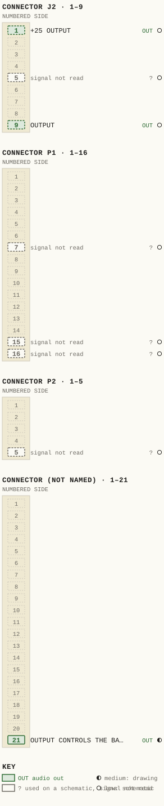
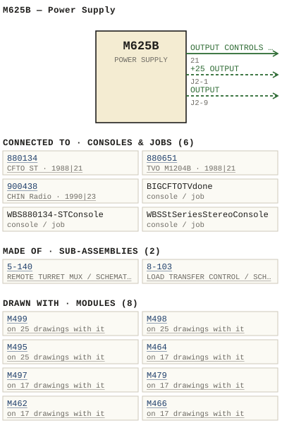

M625B — Power Supply
| Type | module |
| Category | POWER |
| Try it | simulator & front panel · download package (zip) |
| Earliest dated evidence | 1978|11 — title-block date |
| Evidence | "DATE MAY 78" in PUBLIC/Manuals + tech DOCUMENTS/Modules/M625B - Power Supply/M625B - P015 - LB625-02-003 5.jpg |
| Confidence | high |
| All years found | 1978|11 |
| Used in jobs | 880651 (1988|21), 880134 (1988|21), 900438 (1990|23), BIGCFTOTVdone, WBS880134-STConsole, WBSStSeriesStereoConsole |
| Variants | M625, M625A |
| Folder | Consoles/1990-1999/900438 - CHIN Radio |
| Folder | DOCUMENTS/RECENT SCANS/WBSps.ca 20210317 - Small 11X17 drawings |
| Folder | DOCUMENTS/WBSPS - To Be edited/R1400-R2400 - sales |
Connections
What it is made of and what it is part of.
Pictures


M625B.pinout.svg

M625B.connections.svg 1978 - M625B - LAEE EAK SYOA.jpg
1978 - M625B - LAEE EAK SYOA.jpg 1978 - M625B - P015 - LB625-02-003 4.jpg
1978 - M625B - P015 - LB625-02-003 4.jpg 1978 - M625B - 1-117-02-001 - NOTES ALL RESISTORS ARE.jpg
1978 - M625B - 1-117-02-001 - NOTES ALL RESISTORS ARE.jpg 1978 - M625B - 1-117-06-001 - ZOK DIF VAL.jpg
1978 - M625B - 1-117-06-001 - ZOK DIF VAL.jpg 1978 - M625B - 117-02-001 - AOV SERIES CURRENT.jpg
1978 - M625B - 117-02-001 - AOV SERIES CURRENT.jpg 1978 - M625B - 117-02-001 - IOOK IOOK.jpg
1978 - M625B - 117-02-001 - IOOK IOOK.jpg 1978 - M625B - 117-02-001.jpg
1978 - M625B - 117-02-001.jpg 1978 - M625B - 625-06-002 - LSMPONM EYOU' ICALE SUE.jpg
1978 - M625B - 625-06-002 - LSMPONM EYOU' ICALE SUE.jpg 1978 - M625B - 625-06-002.jpg
1978 - M625B - 625-06-002.jpg 1978 - M625B - 717-06-001 - ZOK- DIF.jpg
1978 - M625B - 717-06-001 - ZOK- DIF.jpg 1978 - M625B - M625B - 625-06-002 - SBS M6258 J2 (BLACK) 22' POWER SUPPLY - COMPONENT LAYOUT.jpg
1978 - M625B - M625B - 625-06-002 - SBS M6258 J2 (BLACK) 22' POWER SUPPLY - COMPONENT LAYOUT.jpg 1978 - M625B - P001 - Title Page.jpg
1978 - M625B - P001 - Title Page.jpg 1978 - M625B - P002 - 1-1.jpg
1978 - M625B - P002 - 1-1.jpg 1978 - M625B - P003 - 2-1.jpg
1978 - M625B - P003 - 2-1.jpg 1978 - M625B - P004 - 3-1.jpg
1978 - M625B - P004 - 3-1.jpg 1978 - M625B - P005 - 3-2.jpg
1978 - M625B - P005 - 3-2.jpg 1978 - M625B - P006 - 3-3.jpg
1978 - M625B - P006 - 3-3.jpg 1978 - M625B - P007 - 3-4.jpg
1978 - M625B - P007 - 3-4.jpg 1978 - M625B - P008 - 4-1.jpg
1978 - M625B - P008 - 4-1.jpg 1978 - M625B - P009 - 4-2.jpg
1978 - M625B - P009 - 4-2.jpg 1978 - M625B - P010 - 1-117-1-1.jpg
1978 - M625B - P010 - 1-117-1-1.jpg 1978 - M625B - P011 - 1-117-1-2.jpg
1978 - M625B - P011 - 1-117-1-2.jpg 1978 - M625B - P012 - 1-117-2-1.jpg
1978 - M625B - P012 - 1-117-2-1.jpg 1978 - M625B - P013 - 1-117-2-2.jpg
1978 - M625B - P013 - 1-117-2-2.jpg 1978 - M625B - P014 - 1-117-2-3.jpg
1978 - M625B - P014 - 1-117-2-3.jpg 1978 - M625B - P015 - LB625-02-003 1.jpg
1978 - M625B - P015 - LB625-02-003 1.jpg 1978 - M625B - P015 - LB625-02-003 2.jpg
1978 - M625B - P015 - LB625-02-003 2.jpg 1978 - M625B - P015 - LB625-02-003 3.jpg
1978 - M625B - P015 - LB625-02-003 3.jpg 1978 - M625B - Power Supply.jpg
1978 - M625B - Power Supply.jpg 1978 - M625B - Power Supply_small.jpg
1978 - M625B - Power Supply_small.jpg 1978 - M625B - WBS test procedures 0.jpeg
1978 - M625B - WBS test procedures 0.jpeg 1978 - M625B - WBS test procedures 1.jpeg
1978 - M625B - WBS test procedures 1.jpeg 1978 - M625B - WBS test procedures 2.jpeg
1978 - M625B - WBS test procedures 2.jpeg 1978 - M625B - WBS test procedures 3.jpeg
1978 - M625B - WBS test procedures 3.jpeg 1978 - M625B - WBS test procedures 6.jpeg
1978 - M625B - WBS test procedures 6.jpeg 1982 - 1-117-02-001 - 1-117 REGULATOR BOARD SCHEMATIC - DRN MRW - ENG MRW - ISS 8.jpg
1982 - 1-117-02-001 - 1-117 REGULATOR BOARD SCHEMATIC - DRN MRW - ENG MRW - ISS 8.jpg 1988 - 3642-02-011 - POWER SUPPLIES SCHEMATIC - DRN DS - ISS 6.jpg
1988 - 3642-02-011 - POWER SUPPLIES SCHEMATIC - DRN DS - ISS 6.jpg 19xx - DOC - 600-02-009 - POWER SUPPLY WIRING SCHEMA TIC.png
19xx - DOC - 600-02-009 - POWER SUPPLY WIRING SCHEMA TIC.png 19xx - DOC - R1400-R2400 - 007.jpg
19xx - DOC - R1400-R2400 - 007.jpg 19xx - DOC - R1400-R2400 - 009.jpg
19xx - DOC - R1400-R2400 - 009.jpg 19xx - DOC - R1400-R2400 - 015.jpg
19xx - DOC - R1400-R2400 - 015.jpg 19xx - DOC - 005.jpg
19xx - DOC - 005.jpg 19xx - DOC - 008.jpg
19xx - DOC - 008.jpg 19xx - DOC - 012.jpg
19xx - DOC - 012.jpg 19xx - DOC - 033.jpg
19xx - DOC - 033.jpg WBS - ART - M625B power supply - Inside(1).jpg
WBS - ART - M625B power supply - Inside(1).jpg WBS-ART-M625B-power-supply-Inside-1000x288.jpg
WBS-ART-M625B-power-supply-Inside-1000x288.jpg WBS-ART-M625B-power-supply-Inside-1024x668.jpg
WBS-ART-M625B-power-supply-Inside-1024x668.jpg WBS-ART-M625B-power-supply-Inside-150x150.jpg
WBS-ART-M625B-power-supply-Inside-150x150.jpg WBS-ART-M625B-power-supply-Inside-200x200.jpg
WBS-ART-M625B-power-supply-Inside-200x200.jpg WBS-ART-M625B-power-supply-Inside-300x195.jpg
WBS-ART-M625B-power-supply-Inside-300x195.jpg WBS-ART-M625B-power-supply-Inside-460x300.jpg
WBS-ART-M625B-power-supply-Inside-460x300.jpg WBS-ART-M625B-power-supply-Inside-600x391.jpg
WBS-ART-M625B-power-supply-Inside-600x391.jpg WBS-ART-M625B-power-supply-Inside-624x407.jpg
WBS-ART-M625B-power-supply-Inside-624x407.jpg WBS-ART-M625B-power-supply-Inside-768x501.jpg
WBS-ART-M625B-power-supply-Inside-768x501.jpg 1988 - 880134 - 3642-02-011 - CONNECTOR PINS VEWED MOLEX.jpg
1988 - 880134 - 3642-02-011 - CONNECTOR PINS VEWED MOLEX.jpg 1988 - 880651 - 880651-04-001 - ARE SUPPLIED.jpg
1988 - 880651 - 880651-04-001 - ARE SUPPLIED.jpg 1990 - 900438 - 900438-01-002 - TIMER RESET OFF TALLY SELECTOR COM.jpg
1990 - 900438 - 900438-01-002 - TIMER RESET OFF TALLY SELECTOR COM.jpg 1988 - BIG CFTO TV done - 3642-02-011.jpg
1988 - BIG CFTO TV done - 3642-02-011.jpg 1988 - ST - 005.jpg
1988 - ST - 005.jpg 19xx - 600-02-100 - M625B D TEST JIG SCHEMATIC (T625B) - DRN T. RICHARDSON - ENG T. RICHARDSON - ISS 1.png
19xx - 600-02-100 - M625B D TEST JIG SCHEMATIC (T625B) - DRN T. RICHARDSON - ENG T. RICHARDSON - ISS 1.png WBS console Value copy 2.png
WBS console Value copy 2.png 1987 - 600-02-009 - POWER SUPPLY WIRING SCHEMATIC - DRN JRG - ENG JRG - ISS 1.png
1987 - 600-02-009 - POWER SUPPLY WIRING SCHEMATIC - DRN JRG - ENG JRG - ISS 1.pngPrice history
| Year | Kind | Price | Listed as | Effective | Source |
|---|---|---|---|---|---|
| 2005|38 | used market value | 100.00 | M625B Power Supply | wbsps - website ARCHIVE/WBSPS 2008/ARCHIVE/old website/PriceGuide.htm | |
| 2006|39 | used market value | 100.00 | M625B Power Supply | wbsps - website ARCHIVE/WBSPS 2008/ARCHIVE/jan 2006 shell/priceguide.htm |
Pinout & connections
Each contact as its own documents name it: 3 named (1 medium, 2 low confidence). An empty slot is a contact no page names. Hover a contact for its source; the table under the drawing lists them.
pinout (SVG) · connections (SVG) · pins (JSON)
Pin evidence — 8 contacts
| Pin | Signal | Kind | Confidence | Read from | Source |
|---|---|---|---|---|---|
| 21 | OUTPUT CONTROLS THE BASE CURRENT TURN DRIVES also: OUTPUT CONTROLS THE B… (prose) | audio out | medium | prose | 1978 - M625B - P010 - 1-117-1-1.jpg, p. 1 “The output controls the base current turn, drives the positive series regulator the main frame by way edge connector pin 21 .” |
| J2-1 | +25 OUTPUT | audio out | low | schematic | 1978 - M625B - P004 - 3-1.jpg, p. 1 “~Install temporary jumper across R11 1-117 disable the complementary "loss voltage" detector 7612 'Ssrino? Dn8 00: ~Install 1-117 card _ Tm…” |
| J2-5 | — | used on a schematic, signal not read | low | schematic | 1978 - M625B - P004 - 3-1.jpg, p. 1 “~Install temporary jumper across R11 1-117 disable the complementary "loss voltage" detector 7612 'Ssrino? Dn8 00: ~Install 1-117 card _ Tm…” |
| J2-9 | OUTPUT | audio out | low | schematic | 1978 - M625B - P004 - 3-1.jpg, p. 1 “~Remove power and install and 04. (Right side heat sink when facing power supply) _ otino3 Golienclila? 9n) Zuio4- ~Monitor the output J2-…” |
| P1-7 | — | used on a schematic, signal not read | low | schematic | 1978 - M625B - WBS test procedures 1.jpeg, p. 1 “Check that the "high" side of the AC Iine voltage is connected between P1-7 and the "Line" side of the circuit breaker Sw1” |
| P1-15 | — | used on a schematic, signal not read | low | schematic | 19xx - DOC - 600-02-009 - POWER SUPPLY WIRING…, p. 1 “P1-16 P1-15” |
| P1-16 | — | used on a schematic, signal not read | low | schematic | 19xx - DOC - 600-02-009 - POWER SUPPLY WIRING…, p. 1 “P1-16 P1-15” |
| P2-5 | — | used on a schematic, signal not read | low | schematic | 19xx - DOC - 600-02-009 - POWER SUPPLY WIRING…, p. 1 “P2-5,6” |
Dates found in the documents
| Year | Kind | Text | File |
|---|---|---|---|
| 1978|11 | title-block date | DATE MAY 78 |
1978 - M625B - LAEE EAK SYOA.jpg |
| 1978|11 | month & year | MAY 78 |
1978 - M625B - P015 - LB625-02-003 4.jpg |
| 1978|11 | month & year | MAY 78 |
1978 - M625B - Power supply.pdf |
| 1978|11 | month & year | MAY 78 |
1978 - M625B - Power supply.pdf |
Physical manual inventory
| Item | Location | Status | Scanned |
|---|---|---|---|
| RE-SCAN - M625B - Power Supply | DUPLICATE | Recently scanned and stiched by WB | |
| M625B - Power Supply | NEEDS TO BE RESCANNED | ||
| M625B Power Supply | LOOSE BOX |
Documents (8)
Photos & scans (80)


Sub-assemblies & parts used (2)
| Item | What | Family | Year | How we know |
|---|---|---|---|---|
| 5-140 | REMOTE TURRET MUX / SCHEMATIC | Sub-assemblies (n-nnn) | 1976|9 | named in its manual |
| 8-103 | LOAD TRANSFER CONTROL / SCHEMATIC | Sub-assemblies (n-nnn) | 1979|12 | named in its manual |
Parts list — board M625B (20 parts)
From 1978 - M625B - P013 - 1-117-2-2.jpg, page 1 (scanned); also in timelines/data/bom.csv.
| Ref | Part | Value | Manufacturer | Mfr part no. |
|---|---|---|---|---|
| R3 | Z4220M20 Jbze7 | 22K | ||
| R4 | KSc =J Cod? Cut | 220 | ||
| R9 | MEC [-Ji 5eoj 2 K0. | 0/ 3 | ||
| R14 | Trim pot Piher PT 1Oh (2.5) | 500 | ||
| R1S | Resistor 1/4w 5% id3ti15K Philips Doio TRJ | |||
| R16 | Ezmi "9Ns C9) | 470k | ||
| R18 | Trim pot iowo.5K Piher PT 10h (2.5) SK | |||
| R19 | Resistor 300 Dale | 3 . 75w | CW-2B | |
| R20 | Resistor 1/4w 5% Philips 453 | 2K7 | ||
| R22 | Resistor 75 Dale | 3 . 75w | CW-2B | |
| R23 | Resistor 1/4w 5% Philips | 330 | ||
| R25 | ~JLM | 12k | 30121271877 | |
| R27 | stono 1OK Philips | |||
| R28 | Trim pot Bra1s00 Piher PT 1Ov (2.5) | 500 | ||
| R29 | Resistor 1/4w5% Philips | 10K | ||
| R30 | BeVI | 91K | ||
| R31 | Trim pot Piher PT | 20k | 1Ov (2.5) 20K | |
| R32 | Resistor 1/4w 5% Philips | 870124k | ||
| R33 | Trim pot Piher PT 1Ov (2.5) | 5k | ||
| R35 | Resistor 1/4w 5% Philips | 24k |
Consoles & jobs it is connected to (6)
Their own drawings name this module.
| Job | Year | Drawing | Page |
|---|---|---|---|
| 880134 | 1988|21 | 1988 - 880134 - 3642-02-011 - CONNECTOR PINS VEWED MOLEX.jpg | 1 |
| 880651 | 1988|21 | 1988 - 880651 - 880651-04-001 - ARE SUPPLIED.jpg | 1 |
| 900438 | 1990|23 | 1990 - 900438 - 900438-01-002 - TIMER RESET OFF TALLY SELECTOR COM.jpg | 1 |
| BIGCFTOTVdone | 1988 - BIG CFTO TV done - 3642-02-011.jpg | 1 | |
| WBS880134-STConsole | 1988 - ST - 005.jpg | 1 | |
| WBSStSeriesStereoConsole | 1985 - ST - Binder1.pdf | 5 |
Named in other drawings & documents (6)
From the manuals
Each manual split into its sections. Text that is the same in many Ward-Beck manuals (warranty, address, standard notes) is kept once on the Boilerplate page and linked.
Specifications (1)
Technical Data — 127 words · 1978 - M625B - P002 - 1-1.jpg, page 1
M625B POWER_SUPPLY DC Output: +25 volts amperes load currents from Line Regulation: 1% for Iine variations from 105 125 from 210 250 volts ac respectively Load Regulation: for load variations from zero full load. Ripple and Noise: Less than 500 microvolts RMS for all Iine and load conditions specified above Internal Impedance: Less than ohm from dc to 20 kHz _ Stability: 0.1 volts measured over an period, after minutes warmup - hour Protection: Overcurrent and short circuit foldback_ Overvoltage crowbar.
AC Input: 115/230 volts ac nominal 50/60 Hz . Maximum input power: 525 VA_ Ambient Temperature: Dimensions: 40 degrees Celsius at rated output_ 8.45" wide 5.1" high 13.7" deep (214.6 mm 130 Mm 348 mm) Accessories: MF6A mounting frame (accommodates two M6258 power supplies) _ 1-1
- source: 1978 - M625B - P002 - 1-1.jpg, p. 1
Maintenance & alignment (3)
Test Procedure — 298 words · 1978 - M625B - WBS test procedures 2.jpeg, page 1
M625B POWER SUPPLY 10) ~Apply power and check both output voltages_ If the regulator is opera ting correctly, the +25 and the -25 outputs should be within approximately volts of specified output. Adjust R14 (1-117) to raise or lower the +25 V output. Adjust R18 (1-117) to equalize the differential between the two voltages_ As it is important that the two voltages be identical, use DMM to check both voltages 11 ) ~Set the metering switch on the front panel to OFFSET and plug the DMM into the meter jacks.
~Adjust the calibration control R28 (1-117) to read volts at the DMM _ 12) ~Set the metering switch to +25 and set the DMM to CURRENT range. ~Adjust the calibration control R39 (1-117) to read +250 uA at the DMM _ ~Set the metering switch to -25 ~Adjust the calibration control R31 (1-117) to read -250 uA at the DMM.
13) ~Remove power. Connect an ammeter in series with 25 ohm load resistor (min. 100 W ) between J2-1 and J2-9 _ ~Slowly apply power and observe load current. The load current should stabilize at A 14) ~Change the load resistance to 10 ohms (min. 250 W ) _ ~Slowly apply power and observe load current. It should stabi- Iize at A ~Set me tering switch to +1 _ ~Plug the DMM into metering jacks ~Adjust the calibration control R33 (1-117) for reading of +50 uA _ ~Set metering switch to ~I .
~Adjust the calibration control R34 (1-117) for reading of -50 uA _ 15) ~Remove the DMM from the metering jacks. ~Leave the ammeter in the load circuit and reduce the load resistance slowly Foldback current limiting should set in at approximately ~Short circuit the output completely Load current should be 25 or less_ Page of
- source: 1978 - M625B - WBS test procedures 2.jpeg, p. 1
Test Procedure — 252 words · 1978 - M625B - WBS test procedures 1.jpeg, page 1
M625B POWER SUPPLY Reference M625B Manual 1 ) Using WBS schematic LB 625-02-003 as reference, check the module for correct assembly with special atttention given to the following= Check that the "high" side of the AC Iine voltage is connected between P1-7 and the "Line" side of the circuit breaker Sw1 Check that filter capacitors C3 and C4 are wired for the correct polarity Check that the connections for power transistors 01 _ 02, 03 and 04 are wired correctly .
d) Ensure that both fuses blow) and size (ZA ) are the correct type (fast 2) ~Apply power and check for presence of approximately +40 Vdc at the output sides of fuses F2 and F3 _ 3) ~Remove power. Install Q1 and 02 _ (Left side heat sink when facing power supply) 4) ~Install temporary jumper across R11 on 1-117 to disable the complementary "loss of voltage" detector.
5) -Install 1-117 card_ 6) ~Monitor the +25 output at J2-1 and J2-5 . Apply primary ac power slowly using variac. If the output should not g0 into regulation by the time it reaches +27 V, adjust R1b (on 1-117) to reduce the voltage to +25 V 7 ) ~Remove power and install 03 and 04 _ when facing power supply ) (Right side heat sink 8 ) ~Monitor the -25 output at J2-9 and J2-5 _ The -25 output should go into regulation before the voltage reaches -27 V 9) ~Remove power.
Remove jumper form R11 on 1-117 Page of ISSUE APRIL/83
- source: 1978 - M625B - WBS test procedures 1.jpeg, p. 1
Test Procedure — 230 words · 1978 - M625B - WBS test procedures 3.jpeg, page 1
M625B POWER SUPPLY 16 ) ~Operate the supply with load current of A . ~Measure the noise across each half of the power supply output, as wel | as across the +25 terminals_ Noise should be less than 500 uV RMS . Use oscilloscope to check for possible oscillations_ 17) ~Remove power. ~Using 10 to 25 ohm resistor, short emitter to collector on Q1 or 02 _ ~Place voltmeter across the +25 V output (J2-1 J2-5) _ ~Slowly apply ac input with variac.
When the voltage reaches approximately 28 to 30 volts, the crowbar' SCR 09 (1-117) should fire and short circuit the supply output _ ~Repeat above for the negative output of the supply 18) ~Set the metering switch to OFFSET and connect the DMM to the meter jacks Switch DMM to VOL TAGE _ ~Apply power to the supply_ -Intermittently connect and remove the 10 ohm load.
The change in meter reading should not exceed +100 mV_ 19) DC VOL TAGE CHART The following dc voltages are typical and are obtained under no load conditions, with the ac input adjusted such as to result in an unregulated voltage of +40 Vdc . The voltmeter used should have minimum impedance of 70, 0oo ohms/volt. M625B Main Frame: Emitter Base Col lector 01 02 03 04 +25 +25 -40 -40 +25.5 +25.5 -39.5 -39.5 +40 +40 -25 -25 Page of
- source: 1978 - M625B - WBS test procedures 3.jpeg, p. 1
Parts list (text) (1)
Parts List — 85 words · 1990 - M625B - DOC - CHIN Radio R14000001.pdf, page 22
WARD-BECK SYSTEMS LTD,
C H I NR A D I O
Rl4OORADIOCONSOLE
R E PLACEABLE
1,
WARD-BECK SYSTEMS LTD.
C H I NR A D I O
REPLACEABLE PARTSLIST
\'
WARD-BECK SYSTEMS LTD.
C H I NM D I O
R E PLACEABLE
:,
WARD-BECK SYSTEMS LTD.
C H I NR A D I O
R 14OO RADIO CONSOLE LIST OF SEPAMTELY SUPPLiEDSTANDARD PRODUCT MANUALS
8) t'1497 A Master Module
WARD-BECK SYSTEMS LTD.
C H I NR A D I O
DRAWIN L IGS T
Also: parts boilerplate (5 devices) · parts boilerplate (5 devices) · parts boilerplate (5 devices) · parts boilerplate (5 devices) · parts boilerplate (5 devices) · parts boilerplate (5 devices) · parts boilerplate (5 devices) · parts boilerplate (5 devices) · parts boilerplate (5 devices) · parts boilerplate (5 devices) · parts boilerplate (5 devices) · parts boilerplate (5 devices) · parts boilerplate (5 devices) · parts boilerplate (5 devices) · parts boilerplate (5 devices) · parts boilerplate (5 devices) · parts boilerplate (5 devices) · parts boilerplate (5 devices) · parts boilerplate (5 devices) · parts boilerplate (5 devices) · parts boilerplate (5 devices) · parts boilerplate (5 devices) · parts boilerplate (5 devices) · parts boilerplate (5 devices) · parts boilerplate (5 devices) · parts boilerplate (5 devices) · parts boilerplate (5 devices) · parts boilerplate (5 devices) · parts boilerplate (5 devices)
- source: 1990 - M625B - DOC - CHIN Radio R14000001.pdf, p. 22
Drawings (24)
Each scan with its trace laid over it: the slider runs from the scan to the vector drawing. Click one to see it large and save it as SVG, DXF, KiCad, PDF or PowerPoint.
Regulator Board Schematic Engviewer
Aov Series Currentviewer
Iook Iookviewer
1978 - M625B - 117-02-001viewer
1-117 REGULATOR BOARD / SCHEMATICviewer
M625B / POWER SUPPLIES / SCHEMATICviewer
Power Supply Wiring Schema Ticviewer
Zok Dif Valviewer
Regulator Boarrd Component Layqut Ssubviewer
Fowerlsupply Lsmponn Eyoui Sueviewer
1978 - M625B - 625-06-002viewer
Power Supply Component Layoutviewer
Laee Eak Syoaviewer
Read from the drawing title blocks.
| Drawing | Title | Date | Drawn by | Checked by | Iss. | Source |
|---|---|---|---|---|---|---|
| — | Laee Eak Syoa | 1978|11 | C SCHEMATIC | file | ||
| LB 1-117-02-001 | 1-117 REGULATOR BOARD / SCHEMATIC | 1982|15 | MRW | RNL | 8 | file |
| D 3642-02-011 | M625B / POWER SUPPLIES / SCHEMATIC | 1988|21 | DS | 6 | file | |
| — | file | |||||
| — | file | |||||
| — | file | |||||
| — | file | |||||
| — | file | |||||
| — | file | |||||
| — | file | |||||
| — | file | |||||
| — | file | |||||
| — | file | |||||
| 1-117-02-001 | Notes All Resistors Are | MRW | RM | file | ||
| 1-117-02-001 | Regulator Board Schematic | MRW | RA | 1 | file p.26 | |
| 1-117-06-001 | Zok Dif Val | file | ||||
| 117-02-001 | file | |||||
| 117-02-001 | Aov Series Current | file | ||||
| 117-02-001 | Iook Iook | file | ||||
| 600-02-009 | Power Supply Wiring Schema Tic | JRG | 1 | file | ||
| 625-06-002 | file | |||||
| 625-06-002 | Lsmponm Eyou' Icale Sue | file | ||||
| 625-06-002 | Eng Power Supply | 1 | file | |||
| 717-06-001 | Zok- Dif | file |